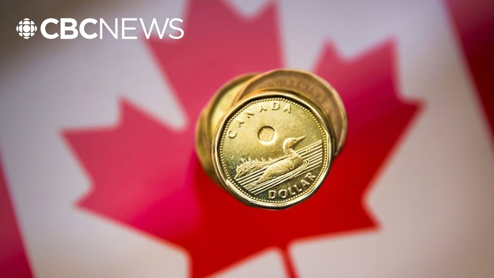

【加拿大2025年第一季度GDP年化增长率达2.2%，超出预期】
Summary: Canada's economy showed unexpected resilience with 2.2% annualized GDP growth in Q1 2025, driven by strong trade activity and efforts to bypass pending tariffs, though some sectors like oil and gas declined.
摘要： 加拿大经济在2025年第一季度表现出意外韧性，年化GDP增长达2.2%，主要受强劲贸易活动和规避关税措施推动，但石油和天然气等行业出现下滑。

⏱️ Estimated Reading Time: 3 min
Stats can with the GDP numbers for the economy and for the quarter and Scott is here.
统计局公布了经济和季度GDP数据，斯科特也在现场。
The expectation was things would slow because of the tariffs.
此前预期因关税影响经济将放缓。
Yes.
确实如此。
What has happened?
实际情况如何？
Uh the exact opposite.
恰恰相反。
We're actually seeing a real resilient strength for the Canadian economy up 2.2%.
我们看到加拿大经济展现出真正韧性，增长达2.2%。
That's our annualized inflation or uh GDP rate for the first quarter.
这是第一季度的年化通胀率或GDP增长率。
And this is due to a lot of imports exports.
这得益于大量进出口活动。
A lot of people in the US trying to skirt around the pending uh Trump tariffs.
许多美国企业试图规避即将实施的特朗普关税。
And so we actually saw the economy a lot stronger than the Bank of Canada and economists were predicting.
因此经济表现远超加拿大央行和经济学家的预测。
So 2.2% is our our new uh rate.
因此2.2%是我们新的增长率。
That's our growth rate for our economy.
这就是我们的经济增长率。
March it was up.5%.
三月份增长0.5%。
So with those three months together, that's the first quarter.
三个月数据合并即为第一季度表现。
That's what we're talking about.
这就是我们讨论的情况。
Now exports up 1.6% in the first quarter.
第一季度出口增长1.6%。
Passenger vehicles surged close to 17% as a lot of uh uh manufacturers tried to get vehicles back and forth across the border.
乘用车出口激增近17%，因许多制造商试图通过跨境运输规避关税。
We also saw industrial, machinery, parts exports up 12%.
工业机械和零部件出口也增长12%。
Uh businesses uh uh investing in that and and trying to again skirt around the tariffs.
企业加大投资并试图再次规避关税。
But exports fell in oil and gas.
但石油和天然气出口下降。
We saw oil and bumen exports down 2.5%.
原油和沥青出口下降2.5%。
Refined petroleum products down over 11% and household spending continuing to be strong but slowing a little bit 3% as as a lot of Canadians are pulling back in their spending.
成品油出口下降超11%，家庭支出保持强劲但略有放缓至3%，因许多加拿大人缩减开支。
a little bit of fear uh in as well regards to the tariffs.
对关税也存在一定担忧。
We saw residential construction down close to 3%.
住宅建设下降近3%。
Business investment and this is a big worry.
商业投资令人担忧。
There was down in factory buildings, structures, that sort of thing.
工厂建筑和设施等投资下降。
But intellectual property research and development also down.
知识产权研发投资也出现下滑。
But business investment increased in machinery and equipment by over 5%.
但机械和设备商业投资增长超5%。
So a little bit of optimism there, but this might dampen the idea that the Bank of Canada will lower rates again a little bit hotter than expected.
因此存在些许乐观情绪，但这可能削弱加拿大央行再次降息的预期，因经济比预期更热。
Then the next decision by the Bank of Canada is on Wednesday.
加拿大央行下次议息决定将在周三公布。
On Wednesday of this week ahead, 4th of June, big day.
本周三即6月4日将是大日子。
Playoffs also starting.
季后赛也将开赛。
Lots of reasons to watch.
有很多关注理由。
Scott, thank you.
斯科特，谢谢。